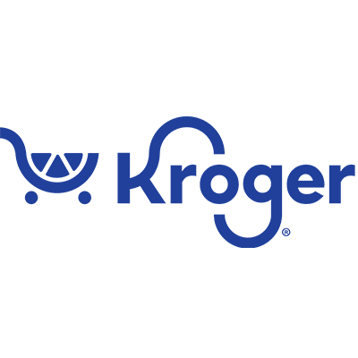

Operational cost reduced
For mid-market operations teams
Turn complex operations into clear, measurable systems.
We work with medium to large scale companies to replace slow, manual processes with intelligent systems that improve execution, sharpen margins, and compound in value over time.
Your
Business Revenue Clarity Speed Control
Business Revenue Clarity Speed Control
Manual hours eliminated weekly
Faster workflow turnaround
What We Do
Systems that sharpen business judgment.
We replace slow, manual operations with systems built to run clearly and improve over time from blueprint through deployment and beyond.
ROI Blueprint
We analyze workflows, tools, costs, handoffs, and decision points to identify where intelligent automation can create the strongest return.
AI Automation
We design and deploy automation around repeatable decisions, documents, customer operations, internal coordination, and data movement.
Workflow Intelligence
We turn scattered processes into clear operating systems that help teams move faster without losing judgment, context, or quality.
Back-Office Operations
We do not just launch we stay. Once deployed, we take ownership of ongoing performance, maintenance, and optimization so value compounds without added operational burden.
Why Suraj Analytics
Built for outcomes that compound.
Digital transformation should move revenue, profitability, and operating clarity not just introduce new tools. Suraj Analytics is structured around long-term partnership and steady system improvement.
Increased Profits
Reduce operational drag, eliminate inefficiencies, and unlock capacity that strengthens margins and customer experience.
Long-Term Partnership
Once your system is live, it is ours as much as it is yours. We provide ongoing, practical support so your platform keeps delivering value.
Annual System Upgrades
Structured upgrades keep your infrastructure modern, secure, and performance-driven as technology and business needs evolve.
Our Clients
Trusted by growing businesses working with us.

Ready When You Are